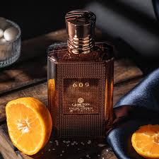
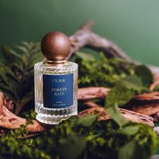

The Aqua Allegoria fragrance.

Cartloon london Men's Perfume

Forest Rain Perfume
The Aqua Allegoria fragrance.
Cartloon london Men's Perfume
Forest Rain Perfume
Perfume - Buy best Perfumes for Men & Women Online at best price in India. Smell fresh with our Perfumes from top brands in various fragrances at Myntra. 4.7store rating (444) · Free delivery
+91 9876543201
myntra@gmail.com
A perfume is a liquid mixture used to emit a pleasant odour. It is formed from fragrant essential oils derived from plants and spices or synthetic aromatic compounds. Cosmetic fragrances applied to a person's body to emit a pleasant smell include perfume, cologne, and aftershave Perfumes can contain hundreds of ingredients. The odoriferous compounds in perfume can be extracted from plants or animals, or manufactured synthetically. Modern perfumery began in the late 19th century People wear perfume to increase their self-confidence and self-appeal. Scents can improve mood, reduce stress and anxiety, and increase cognitive function. Perfumes are applied to warmer parts of the body, such as the neck, wrist, and back of the knee, because they smell more in warmer temperatures.